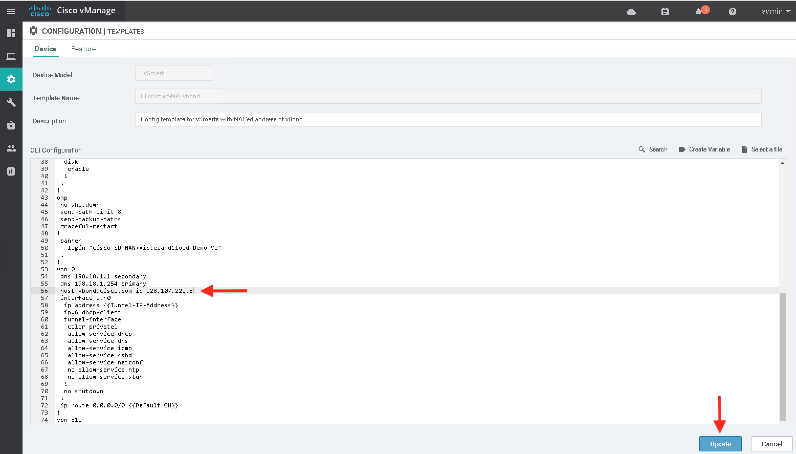

Exploring SDWAN Control Plane (vManage GUI, vSmart and vBond)
This task will walk through the steps to explore vManage GUI, vBond and VSmart configurations
Pre-requisite: Remote Desktop (RDP) session has to be established on RDP client already. You will use RDP client to connect to SDWAN controllers. If RDP session is not operational then please complete the previous Tasks first.
Step 1: Exploring vManage GUI
In this step we will explore vManage GUI. vManage is a centralized network management system that provides a GUI interface to easily collect data from managed devices, present statistics, host troubleshooting tools, and manage configurations for all devices, templates, and policies.
- Once you connect to the remote workstation with Remote Desktop (RDP) client; then run Chrome by clicking its shortcut on the Desktop to access vManage GUI.

- Log on to the vManage using credentials of
adminandadmin
| Note: |
|---|
If admin/admin credentials do not work then you may try using cisco/cisco or cisco1/cisco1 |

The vManage dashboard will be displayed. The dashboard provides a quick summary of the network. At the top, a status indicating reachability will be displayed for any vSmart controllers, vEdge routers, and vBond orchestrators that are installed and have been added to vManage. Here, at a glance, you can view the health of the entire network including the operational state of any device, total number of reboots and crashes, and the state of all controller certificates. This visibility into the network eases the task of managing the SDWAN devices.
The number of controllers will be shown with a green up arrow (indicating reachable), or a red down arrow (indicating unreachable).
| Note: |
|---|
| On the next steps, we will verify the controllers are all showing up before moving on to the next task. |
The menu is located to the left of the Dashboard screen. The following lists each menu and sub-menu item and provides a brief description.
- Monitor
- Geography: A map view of the entire network and displays the geographic location of the devices in the network.
- Network: An inventory of all SDWAN devices in the network along with detailed information on each device.
- Alarms: Details on alarms generated by all SDWAN devices in the network.
- Events: Details on events generated by all SDWAN devices in the network.
- Audit Log: An audit log of all activities on SDWAN devices.
- ACL Log: System log messages related to access lists (ACLs) configured on a vEdge router.
- Configuration
- Devices: Add or delete devices from the overlay network.
- Certificates: Manage certificates and authenticate Viptela devices in the overlay network.
- Templates: Create configuration templates for a set of Viptela devices.
- Policy: Create common policies for a set of vSmart controllers.
- Security: Create and activate zone-based firewalls vEdge routers
- Cloud onRamp for SaaS: Optimize access to cloud applications from Direct Internet Access (DIA) nodes in the overlay network.
- Cloud onRamp for IaaS: Extends SDWAN overlay network into public cloud instances. Create virtual private cloud (VPC) instances for hosting vEdge Cloud routers in the public internet.

- Tools
- SSH Terminal: Establish an SSH session to a SDWAN device.
- Rediscover Network: Locate new devices in the overlay network and synchronize them with the vManage NMS.
- Operational Commands: Run two or more operational commands as a single command.
- Maintenance
- Software Repository:
- Software Upgrade: Download new software images and upgrade the software image running on SDWAN devices.
- Device Reboot: Reboot one or more SDWAN devices.

- Administration
- Settings: Configure organization name and certificate authorization settings.
- Manage Users: Add, edit, or delete users and user groups from the vManage NMS.
- Cluster Management: Create and manage a vManage NMS cluster.
- vAnalytics
- Launch vAnalytics: View, at a glance, the performance and availability of the Viptela overlay network, including metrics for carriers, tunnels, and applications.
Step 2: Changing vBond IP Address on vManage
In this step, you will change vBond IP Address on vManage.
-
Launch Mputty application from the Remote desktop by clicking on it's icon on the desktop:

-
Using MPutty on your Remote Desktop session, initiate a SSH session to the vManage with IP address of 198.18.1.10. You can use credentials of
adminandadminfor authentication.- If prompted for "Putty Security Alert" then Trust the host by clicking "Yes" on dialog box.
- The SSH credentials (username and password) are
adminandadminrespectively
| Note: |
|---|
If admin/admin credentials do not work then you may try using cisco/cisco or cisco1/cisco1 |
- On the SSH connection, execute below command to view the
VPN 0related configurations on vManage:show run vpn 0
Below screenshot shows VPN 0 configuration and pre-configured vBond IP address as 128.107.66.118.
Reconfigure vBond IP address from vManage by executing below command;
config t
vpn 0
host vbond.cisco.com ip {vbond-public-ip}
commit and-quit
| Note |
|---|
Curly brackets with {vbond-public-ip} needs to be replaced by appropriate IP address of vbond for your pod. This IP address will be provided to you lab instructor. If you don't have it please lab instructors |
| Note: |
|---|
Above screenshot shows{vbond-public-ip} as 128.107.222.5 with the purpose of showing an example only, the appropriate IP address of vbond for your pod will be provided to you. Use given vbond IP address while executing above commands |
Navigate to Dashboard and check the vBond orchestrators' status is updated with a green up arrow (indicating reachable).
Step 3: Changing vBond IP Address on vSmart and Exploring vSmart
In this step we will update vSmart template on vManage, and change vBond IP address on VSmart. Then we will verify control connections on vSmart, and status of vSmart on vManage Dashboard.
- Log on the vManage from a web browser (if not already open) and use credentials of
adminandadmin:https://198.18.1.10
| Note: |
|---|
If admin/admin credentials do not work then you may try using cisco/cisco or cisco1/cisco1 |
- On the vManage GUI, navigate to Configuration > Templates.
- Under Device tab select CL-vSmart-NATvbond template and then Click the three dots
...on the right side and SelectEditoption from the drop down menu as shown in the below screenshot:
- Scroll down and find
vpn 0configuration and select vbond IP address.
-
Replace
{vbond-public-ip}with vBond IP address of your pod and click Update.Note: Below screenshot shows 128.107.222.5 with the purpose of showing an example only, the appropriate IP address of vbond for your pod will be provided to you. Use given vbond IP address while changing vBond IP address.

- Click Next
- Click Configure Devices
- Verify that configuration template is updated successfully and scheduled to be attached to vSmart as shown in below screenshot.
-
Since vSmart is still not reachable, vBond IP address on vSmart is to be updated for once only through the CLI to make it online. Once vSmart is online and its status on vManage is up, vManage configuration template will be in effect to maintain it and any configuration change will not be allowed through the CLI.
-
Launch Mputty application from the Remote desktop by clicking on it's icon on the desktop to initiate a SSH session to the vSmart. You can use credentials of
adminandadminfor authentication.
- If prompted for "Putty Security Alert" then Trust the host by clicking "Yes" on dialog box.
-
The SSH credentials (username and password) are
adminandadminrespectivelyNote: If admin/admincredentials do not work then you may try usingcisco/ciscoorcisco1/cisco1 -
On the SSH connection, execute below command to view the
VPN 0related configurations on vSmart:show run vpn 0
Below screenshot shows VPN 0 configuration and pre-configured vBond IP address as 128.107.66.118.
Reconfigure vBond IP address from vManage by executing below command;
config t
vpn 0
host vbond.cisco.com ip {vbond-public-ip}}
commit and-quit
| Note |
|---|
Curly brackets with {vbond-public-ip} needs to be replaced by appropriate IP address of vbond for your pod. This IP address will be provided to you lab instructor. If you don't have it please lab instructors |
| Note: |
|---|
Above screenshot shows {vbond-public-ip}} as 128.107.222.5 with the purpose of showing an example only, the appropriate IP address of vbond for your pod will be provided to you. Use given vbond IP address while executing above commands |
- Navigate to Dashboard and check the vBond orchestrators' status is updated with a green up arrow (indicating reachable).
-
On the Mputty client with SSH session to
vSmartverify that template is successfully attached by running below command:show system status -
The output of above command should show that vManage is now centrally maintained by vManage and also provides the name of template attached as shown below screenshot:
vManaged: trueConfiguration template: CL-vSmart-NATvbond
- Execute the below command to verify that system related configurations on vSmart:
show run system
As shown in the partial output in the below screenshot, the vSmart has been pre-configured with below system related configurations:
* hostname
* system-ip
* site-id
* organization name
* vBond DNS name of vbond.cisco.com
| Note: |
|---|
A static DNS entry for the hostname vbond.cisco.com has been configured under vpn 0 in previous steps (it will be visible in subsequent bullet) |
- Execute the below command to see the configuration related to
vpn 0:show run vpn 0
-
You may also execute
show runcommand to view the full configuration of vSmart -
Run the below commands to verify that certificate has been installed and view the details of certificate respectively
show certificate serial show certificate installed
Below screenshot shows the partial output of the above command.

- Run the below command to see the list of control connections of vSmart
show control connections
From the above output you can:
- confirm that State of control plane connection to vManage is up
- confirm that State of control plane connections to vBond are up
| Note: |
|---|
If the State of any control connection is down, then you can execute clear control connections command. And check the control status again by executing show control connections command multiple times. If still there are issues then kindly check with Lab instructor. |
| Note: |
|---|
| Above screenshot shows the Public IP address of the vBond for a reference pod. It will be different for your pod. The Private IP addresses for vManage and vSmart should be same. |
Step 4: Exploring vBond
-
Launch Mputty application from the Remote desktop by clicking on it's icon on the desktop to initiate a SSH session to the vBond. You can use credentials of
adminandadminfor authentication.- If prompted for "Putty Security Alert" then Trust the host by clicking "Yes" on dialog box.
- The SSH credentials (username and password) are
adminandadminrespectively
| Note: |
|---|
If admin/admin credentials do not work then you may try using cisco/cisco or cisco1/cisco1 |
- On the SSH connection, execute the below command to verify that system related configurations on vSmart:
show run system
As shown in the partial output in the below screenshot, the vSmart has been pre-configured with below system related configurations:
* hostname
* system-ip
* organization name
* vBond private IP of 198.18.1.11
-
You may also execute
show runcommand to view the full configuration of vBond -
Run the below commands to verify that certificate has been installed and view the details of certificate respectively
show certificate serial show certificate installed
Below screenshot shows the partial output of the above command.
This concludes the process to explore SDWAN Control Plane (vManage GUI, vSmart and vBond) and change vBond IP address on vManage and vSmart.